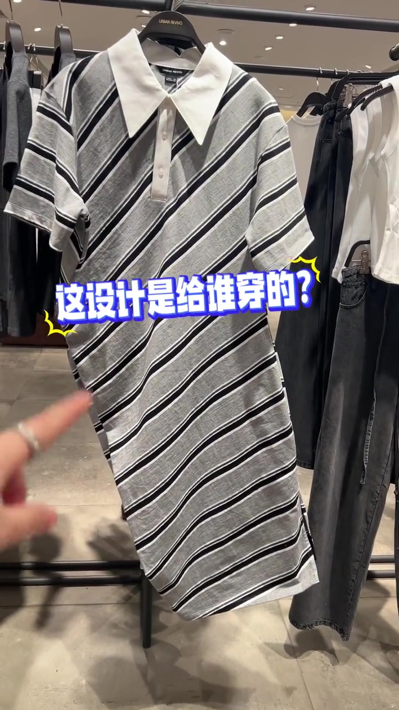
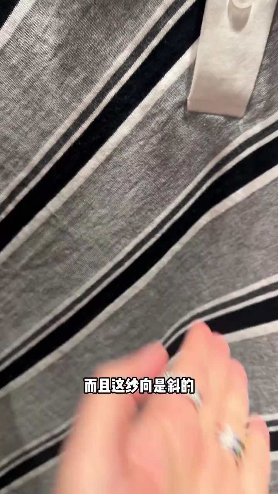
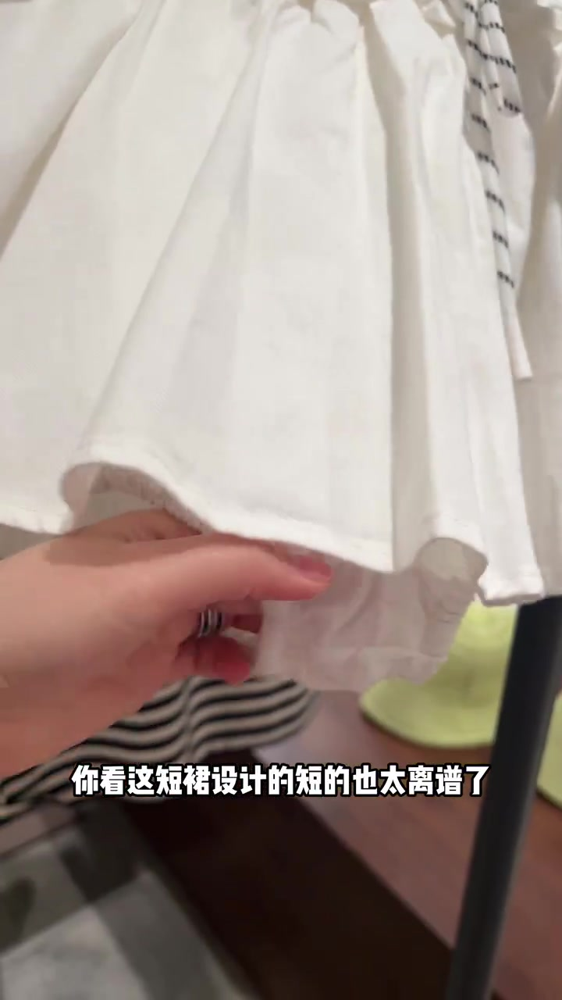
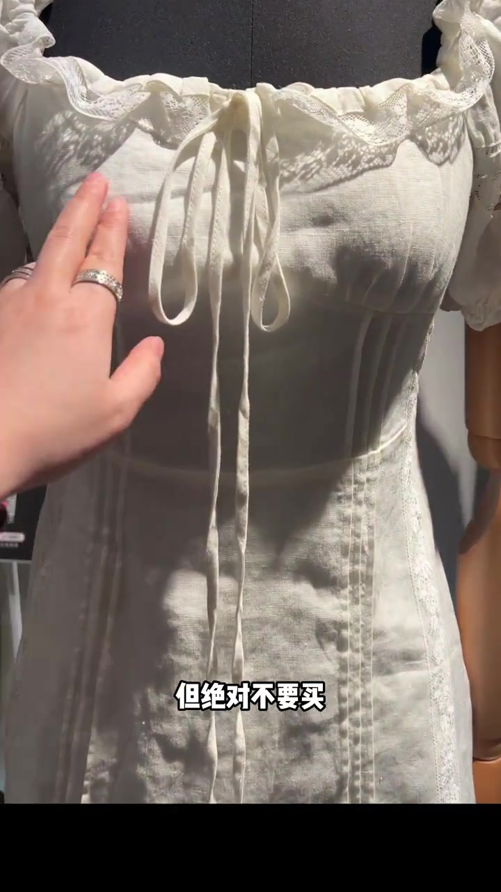
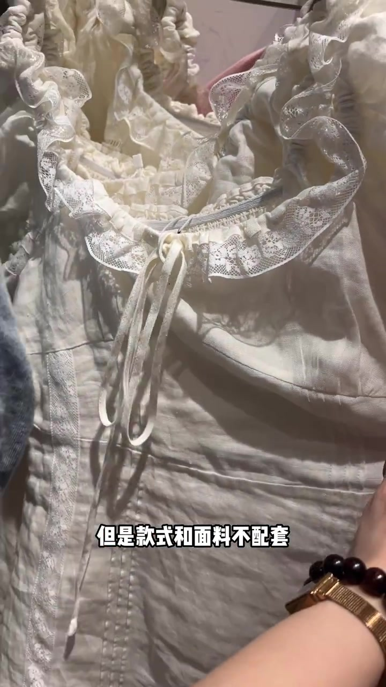
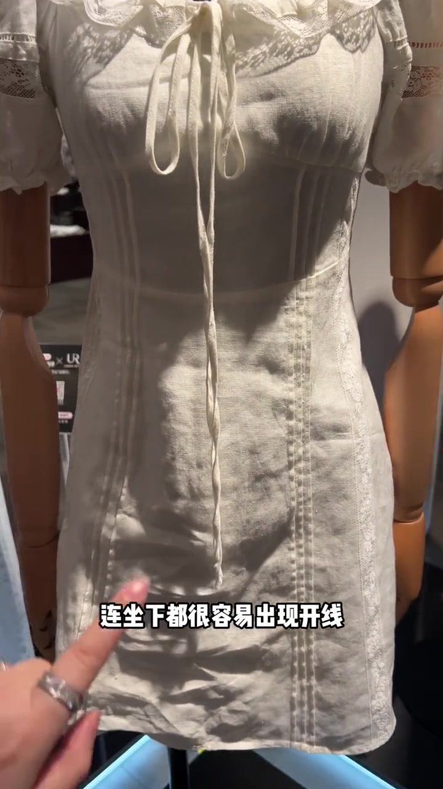
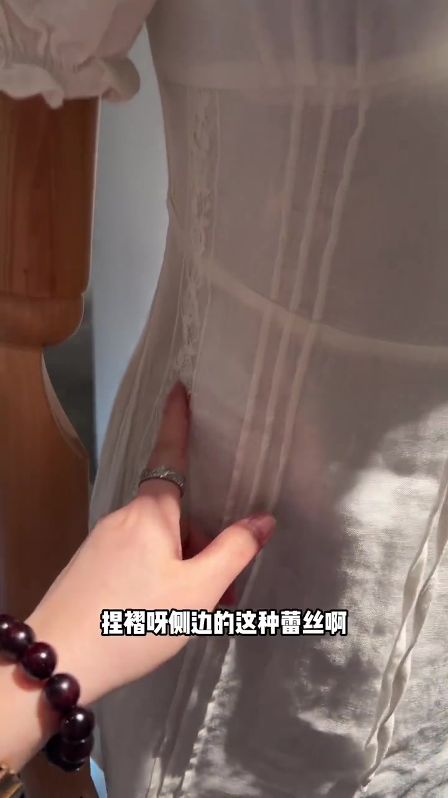

开场：这斜裁 Polo，设计给谁穿的
镜头先落到 URBAN REVIVO 衣架上的灰底斜条纹 Polo：下摆斜切得很夸张，主讲人手指点着侧缝，叠字直接问“这设计是给谁穿的？”
接着特写布面——可见字幕写“而且这纱向是斜的”。主讲人补一句：针织本身弹性很大，就容易变形；斜裁后期更是“百分百变形”的保证。画面从整件切到领口与条纹近景，语气是吐槽多于讲解。
可见字幕校正：Whisper 把“纱向是斜的/针织/斜裁”听成“沙像是鞋的/真知/鞋才”。下文按画面字幕叙述，文末转录区仍保留原始分段。


BM 风短裙：前怕走光后怕走光
话题跳到近两年很火的 BM 风。画面是一条白色荷叶边超短裙挂在衣架上，叠字写“BM风真的很大”。主讲人托起下摆量长度：短得离谱，底裆位置被点出来，穿上前怕走光、后怕走光。
可见字幕原意大意：穿着短裙出去心里压力得多大；设计跟风也得考虑大众真正的需求。
这一段是主讲人对极短裙日常可穿性的主观立场，不是对所有 BM 款的实验室测量。

白裙转折：看着好看，但绝对不要买
镜头切到人台上的白色蕾丝收腰裙——领口抽绳、泡泡袖、竖向分割与侧边蕾丝齐备。字幕先夸再刹：单看款式收腰显瘦，再加上今年流行的蕾丝元素，是好看的；单看面料，百分百亚麻也很好。
转折句落得很硬：但是款式跟面料不配套，没有实穿性。店内旁立着“波妞风 连衣裙同款”立牌，镜头却在做避雷，不是种草。


第一点：收腰贴身 × 零弹亚麻 = 没活动量
主讲人拆开第一条理由：它是收腰款，基本贴身穿，活动量本身给得很小；亚麻又是一点弹力都没有的面料。于是整件衣服几乎没有活动量——连坐下都很容易出现开线。
手指点向裙身中下段缝线位置，把“好看的贴身剪裁”直接翻译成“坐下就可能开线”的风险。

第二点：设计点多 + 亚麻爱出褶
第二条理由更细：这件衣服设计点比较多——风格线、捏褶、侧边蕾丝；再加上亚麻本身爱出褶，坐一下再起来，身上横着竖着乱七八糟，像破烂一样，把原有设计美感打破了。
镜头贴近竖向捏褶与侧边蕾丝嵌条，让观众看见“好看的细节”在无弹亚麻上会如何被坐皱拖垮。

收尾：不要只看好看，要看能不能穿出去
主线收束到标题句：大家不要只看好看，一定要考虑到实穿性。尾段又甩出针织短裤/厚针织边——又厚又热又显胖——并反问“你们日常会穿吗”，把整条片子落回“能不能穿出去”的日常标准。
视频时长约 1 分 08 秒；店内实拍含 URBAN REVIVO 等货架画面。作者名元数据缺失，未虚构 UP 主身份。